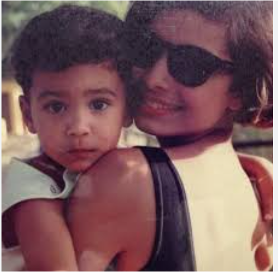

El rapero puertorriqueño Álvaro Díaz, nacido en Hato Rey, San Juan, cultivó su amor por la música desde la infancia gracias a su familia. Influenciado por un padre que tocaba (conga/trombón) y una madre que le cantaba desde pequeño. Tambien llegó a tomar la primera comunión en una prístina túnica con encajes en el cuello, con un rosario entre las manos.